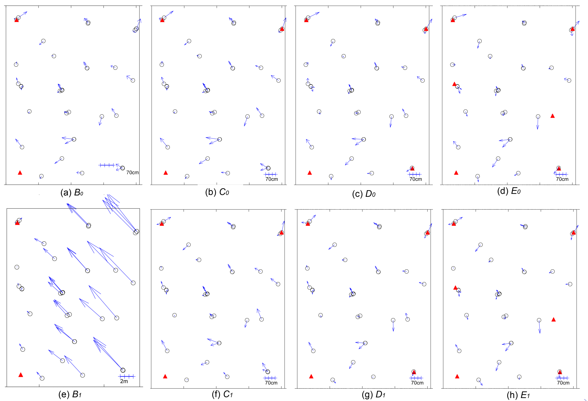

Research on refining satellite's orientation
This work presents the RPC-based bundle adjustment implemented in the free open-source photogrammetric tool MicMac. The bundle adjustment model is based on a set of polynomial correction functions. We enriched them with a physical constraint that introduces the notion of a global sensor rotation. The algorithms are evaluated against two datasets consisting of two stereo and a triplet pair of the Pleiades images. Two sets of correction functions and a number of GCPs configurations are examined. The final geo-referencing accuracy falls below the size of 1GSD.
Regardez la version anglaise
Algorithm
Hypotheses:
- the satellite trajectory is precise
- only the calibration and attitude are incorrect, therfore,
- the refinement can be modelled by a smooth 2D polynomial in x, and y of the image space
Results
Comparison with GT.
Publications
- Rupnik, E., Pierrot Deseilligny, M., Delorme, A., Klinger, Y..
Refined satellite image orientation in the free open-source photogrammetric tools APERO/MICMAC. In: ISPRS Ann. Photogramm. Remote Sens. Spatial Inform. Sci., 3, pp. 83-90, 2016.